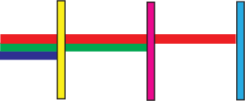

Subtraction of colours of light
The principles of colour addition govern the perceived colour resulting from mixing of different colours of light. However, understanding colour perceptions cannot be complete without an understanding of the principles of colour subtraction. Some materials contain atoms and molecules that are capable of selectively absorbing one or more colours of light. Therefore, if a beam of white light falls on such a material, some light colours are absorbed and some are reflected to the observer’s eye. This is the basis of subtraction of light colours. Figure 5.27 illustrates light colour subtraction. Yellow filter absorbs blue light, magenta filter absorbs green light, and cyan filter absorbs red light.

Colour subtraction
Consider a piece of cloth that is made of materials capable of absorbing blue light. Such a cloth will absorb blue light and reflect the other colours. What appearance will such a cloth have if illuminated with white light, and how can we account for its appearance?
Suppose that a beam of white light made of blue, green and red colours falls on a shirt.
If the shirt absorbs blue light, it will then reflect only red and green light. As we see through reflected light, and since, R+G=Y, the shirt will appear yellow. This example illustrates the process of colour subtraction. In this process, the colour appearance of an object is determined by identifying colours of light that are subtracted from the original set of colours, as depicted in Figure 5.28.
The colour subtraction process illustrated by Figure 5.28 can alternatively be depicted using the colour subtraction equation:
Suppose that the same piece of cloth is illuminated by a cyan light. Since cyan consists of blue and green light, and the cloth absorbs blue light, then blue light is subtracted. The cloth will then appear green. This process is represented by the following equation:
This observation highlights the fact that an object’s colour is not part of the object itself, but depends on the light colours it reflects. Hence, the cloth appears yellow